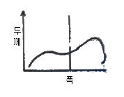
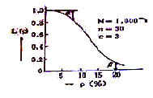
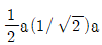
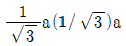
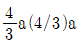

압연기능장 (2014-07-20 기출문제)
1과목: 임의 구분
1. 롤에 대한 흡착성이 우수하고, 마찰계수가 낮아 압연윤활성이 양호하여 극박판 등의 고속압엽이 가능한 압연유는?
- 곡분유계 수용성 압연유
- 광유계 수용성 압연유
- 혼성계 수용성 압연유
- 지방계 수용성 압연유
(정답률: 72%)

2. 압하력이 매우 크며, 생산되는 압연판은 정확한 평행이다. 주로 규소강판, 스테인리스 강판의 압연기로 많이 사용되는 압연기는?
- 클러스터 압연기
- 센지미어 압연기
- 라우드식 3단 압연기
- 스텍켈식 냉간 압연기
(정답률: 70%)
3. 산세작업의 목적이 아닌 것은?
- 코일의 불량부 절단
- 코일표면 오염물 제거
- 코일표면 산화막(scale)제거
- 코일 사이드 트리밍(side trimming)
(정답률: 50%)
4. 압연기의 본체가 3대 이상으로 연속적으로 배열되어 있으며, 일반적으로 가역식 압연기보다 작업속도가 높아 생산성이 높은 냉연 압연기는?
- 데라 압연기
- 탠덤 압연기
- 센지미어 압연기
- 더블 가역식 압연긴
(정답률: 93%)
5. 다음의 표면처리 강판 중 화성처리강판에 해당되는 것은?
- 아연도금강판
- 주석도금강판
- 인산염처리강판
- 알루미늄도금강판
(정답률: 86%)
6. 냉간 박판의 제도 공정 순서로 옳은 것은?
- 핫코일(hot coil) → 산세 → 표면청정 → 냉간압연 → 조질압연 → 풀림 → 전단리코일링
- 전단리코일링 → 핫코일(hot coil) → 냉간압연 → 표면청정 → 풀림 → 조질압연 → 산세
- 전단리코일링 → 산세 ->표면청정 → 냉간압연 → 풀림 → 조질압연 → 핫코일(hot coil)
- 핫코일(hot coil) → 산세 -> 냉간압연 → 표면청정 → 풀림 → 조질압연 → 전단리코일링
(정답률: 85%)
7. 분위기 가스가 스트립 전면에 직접 접촉하여 코일을 균일하게 가열할 수 있고 가스청정이 가능한 풀림 방법은?
- 연속 풀림
- Open Coil 풀림
- Tight Coil 풀림
- 계산기제어 풀림
(정답률: 62%)
8. 직경 900mm 의 롤을 사용하여 폭 1500m, 두께 50mm 의 연강 후판을 두께 40mm 로 압연한 후의 폭은 몇 mm 인가?(단, 폭터짐계수는 0.3이다)
- 1503
- 15⑤
- 1510
- 1515
(정답률: 64%)
9. 롤 크라운(Roll Crown)에 관한 설명이 옳은 것은?
- 상하 작업 롤 지름의 차
- 로의 지름과 롤 목의 지름 차
- 롤의 지름과 연결부 지름의 차
- 롤의 중앙부의 지름과 롤 양단부 지름의 차
(정답률: 94%)
10. 가열로 조업과 압연 라인 조업의 협조로 압연라인에서의 원활한 강관의 반송과 생산성 향상을 목적으로 가열로에 있어 슬래브 추출 시각을 자동으로 결정하는 것을 무엇이라고 하는가?
- OPM : On -Line Profile Meter
- ORG : On -Line Roll Grinder
- MPC : Mill Pacing Control
- FUS : Finishing Set Up
(정답률: 84%)
11. 열연 코일에서 실시하는 스킨패스(Skin Pass)에 대한 설명으로 옳은 것은?
- 완성 압연된 Hot Coil 의 1차 스케일 제거를 위한 것이다.
- 완성 압연된 Hot Coil 의 2차 스케일 제거를 위한 것이다.
- 스트립을 냉각시킨 다음 1~4% 정도 가벼운 냉간 압연을 함으로서 Hot Coil 의 평탄도를 향상시키기 위한 것이다.
- 스트립을 일정온도까지 가열시킨 다음 0.1~4.0% 의 가벼운 열간 압연을 함으로서 Hot Coil 의 평탄도를 향상시키기 위한 것이다.
(정답률: 77%)
12. 압연기의 롤에 동력을 전달하는 것이 아닌 것은?
- 피니언
- 쵸크
- 스핀들
- 커플링
(정답률: 79%)
13. 열간압연 조압연의 폭압연시 Bar 두께가 얇을 때 폭 압하를 많이 하면 나타나는 현상이 아닌 은?
- Skid Mark에 의한 폭 변동이 커진다.
- 재료의 Buckling에 의해 폭 압연 효과가 없어진다.
- Dog Bone이 재료 Edge부 부근이라 폭 압연 효율이 나쁘다.
- 롤과 재료와의 사이에서 슬립이 일어나 재료가 앞으로 진행되지 않는다.
(정답률: 67%)
14. 압연가공에서 Vr은 롤의 주속도, V2는 재료의 롤 출구속도라 할 때 선진율(δ)은?
- δ = [(Vr-V2)÷V2] × 100%
- δ = [(V2-Vr)÷Vr)] × 100%
- δ = [(Vr-V2)÷Vr] × 100%
- δ = [(V2-Vr)÷V2] × 100%
(정답률: 62%)
15. 가열로의 형식은 소재의 이동방식에 따라 형식이 불리워지는데 노 길이에 제한이 없고 소재두께 변화에 대응할 수 있으며 소재 이면에 흠이 발생하지 않는 형식은?
- Skid type
- Pusher type
- Walking beam type
- Push-Pull type
(정답률: 77%)
16. 압연윤활유가 압연시 미치는 영향이 아닌 것은?
- 압하력을 증가시킨다.
- 제품의 표면을 깨끗하게 한다.
- 롤과 재료 간의 변형열을 제거한다.
- 롤(Roll)과 스트립 간의 마찰계수를 감소시킨다.
(정답률: 92%)
17. 압연기에서 베어링(bearing)의 주 역할을 설명한 것 중 옳은 것은?
- 롤을 수용하여 지탱하는 장치이다.
- 전동기의 동력을 각 롤에 분배하는 장치이다.
- 롤 목(neck)을 받쳐주고 롤 회전을 좋게 하는 장치이다.
- 압연조업 중에 양쪽 스탠드가 하중을 받아 벌어지지 못하도록 하는 장치이다.
(정답률: 84%)
18. 냉간압연의 특징으로 틀린 것은?
- 압연재 표면이 미려하다.
- 기계적 성질이 우수해 진다.
- 작은 동력으로 큰 변형을 얻을 수 있다.
- 제품의 치수 정도가 우수하다.
(정답률: 94%)
19. 공기 중에서 가열하였을 때 외부 점화원 없이 스스로 연소를 시작하는 최저 온도를 무엇이라고 하는가?
- 비등점
- 연소점
- 인화점
- 발화점
(정답률: 80%)
20. 개방공형에서 공형간극은 어디에 위치해 있는가?
- 롤과 롤의 경계
- 판과 롤 접촉부
- 재료의 모서리
- 롤 지름
(정답률: 92%)
2과목: 임의 구분
21. 압연용 가열로에서 연소효율을 높여 소재 온도를 올리고 강편의 스케일 손실을 적게 하기 위해서는 공기과잉비를 어느 정도로 하는 것이 좋은가?
- 약 0.6 ~ 0.8
- 약 1.03 ~ 1.2
- 약 1.5 ~ 2.3
- 약 2.5 ~ 3.2
(정답률: 92%)
22. 냉간 압연된 재료의 기계적 성질이 감소하는 것은?
- 강도
- 경도
- 연신율
- 항복점
(정답률: 64%)
23. 대기 오염물질의 발생원인 중 검댕(연진, 분진포함)의 발생 원인으로 틀린 것은?
- 탄소와 수소비가 작은 경우
- 연소 공기가 부족한 경우
- 로내 압력이 높은 경우
- 가스 확산 연소시 화염 가운데서 탄소 결함이 있는 경우
(정답률: 79%)
24. 강관표면 형상제어 기술로 압연 롤의 변형으로 인한 판의 평탄도 불량을 방지하기 위하여 연엽기의 상하 작업 롤 및 백업 롤을 크로스 시켜소재를 압연하는 방식은?
- 롤 밴더
- 러핑 밀
- 롤 크라운
- 페어크로스 밀
(정답률: 85%)
25. 냉연설비 중 롤을 회전시키는 스핀들 형식에 서 밀폐형 윤활이어서 고속 회전이 가능한 특징을 갖는 형식은?
- Gear type
- Sleeve type
- Flexible type
- Universal joint type
(정답률: 93%)
26. 스트립을 일정한 폭으로 가공하기 위해 2쌍의 원형 나이프(knife)가 가장자리를 전단하는 것은?3
- Flying Shear
- Crop Shear
- Side Trimmer
- Gas 전단기
(정답률: 85%)
27. 높이 45mm, 폭 100mm, 길이 2m인 소재를 압연하여 높이 25mm,폭 110mm,가 되었을 때 길이는 약 몇 m가 되는가?
- 3.27m
- 4.35m
- 6.86m
- 7.20m
(정답률: 54%)
28. 압연재료가 압연롤(Roll)에 치입하기 유리한 조건이 아닌 것은?
- 작업롤 직경을 크게 할수록 좋다.
- 압연재료에 대한 압하량이 커야 한다.
- 압연재료의 온도가 높을수록 좋다.
- 압연재료와 압연롤의 마찰력이 커야 한다.
(정답률: 82%)
29. 열연 결합 중 곱쇠(Coil Break) 발생 원인이 아닌 것은?
- 가능한 한 저온권취 실시하였을 때
- 냉각이 덜된 상태에서 Uncoiling하였을 때
- 권취시 장력 및 Press - Roll 압이 부적절 하였을 때
- 압연 C.T 불량 및 고온 권취 코일의 형상이 불량할 때
(정답률: 62%)
30. 압연에 대한 설명으로 틀린 것은?
- 중립점을 경계로 재료의 속도가 롤의 주속에 비해 2배로 증가한다.
- 중립점을 경계로 롤과 재료사이의 마찰력의 방향이 바뀐다.
- 평균 압연 압력은 압연하중을 투영 접촉 면적으로 나눈 값이다.
- 폭퍼짐 현상을 적극적으로 이용하고 있는 압연을 공형 압연이라고 한다.
(정답률: 79%)
31. 압연 중 제품의 두께 측정기로 사용되는 것은?
- X- ray
- 압력계
- 스트레인 게이지
- 초음파 탐상 시험기
(정답률: 92%)
32. 압연의 특성을 설명한 것 중 틀린 것은?
- 압연하중은 롤에 들어가는 재료가 얇을수록 감소한다.
- 판의 최소 두께는 마찰계수와 직접적인 관계가 있다.
- 열간압연의 경우보다 냉간압연의 경우에 더 얇은 판재를 만들 수 있다.
- 롤 지름은 압연기로서 압연할 수 있는 최소판 두께를 결정하는데 중요한 영향을 끼친다.
(정답률: 62%)
33. 내권 텔레스코프(Telescope)의 발생 원인이 아닌 것은?
- 스트립 선단의 캠버(Camber)가 있을 때(Camber : 휘어지는 것)
- 사이드 가이드 개도 설정이 불량할 때
- 상하 핀치 롤, 유니트 롤, 맨드렐의 평행도가 불량할 때
- 스트립의 미단이 최종 압연기를 빠져 나오기 전후에 있어서 속도차가 과대할 때
(정답률: 37%)
34. 냉연 공정에서 풀림의 목적이 아닌 것은?
- 내부 응력을 제거 시킨다.
- 경화된 재료를 연화 시킨다.
- 경도 및 항복점을 상승 시킨다.
- 변형 저항을 감소시켜 가공성을 향상 시킨다.
(정답률: 73%)
35. 가열로에 사용하는 내화물에 적합한 요구조건 중 틀린 것은?
- 견고하고 고온강도가 클 것
- 열전도와 팽창, 수축이 충분히 클 것
- 급가열 및 급냉각에 충분히 견딜 것
- 화학적 침식에 대한 저항이 감할 것
(정답률: 75%)
36. 압연시 가열온도가 낮거나 충분한 균일 되지 않을 경우에 발생하는 결점으로 틀린 것은?
- 압연기에 과부하가 걸리게 된다.
- 완성제품에 형상 불량이 발생 한다.
- 변형저항은 감소하나 압연에 영향은 적다.
- 압연 중 온도가 낮아 압연 하중이 증가 한다.
(정답률: 84%)
37. 열간압연에서 상부 롤의 경이 하부 롤 경보다클 경우 압연재의 방향은 어떤 현상이 발생하는 가?
- 압연재의 방향은 변화가 없다.
- 압연재는 아래쪽 방향으로 향한다.
- 압연재는 위쪽 방향으로 향한다.
- 압연재는 좌우 방향으로 향해 Camber가 발생한다.
(정답률: 94%)
38. 가열로의 로압이 높을 때 나타나는 현상이 아닌 것은?
- 버너(burner)의 연소상태가 향상 된다.
- 방염에 의한 로체 주변 철 구조물이 손상 된다.
- 개구부에서 방염에 의한 작업자의 위험도가 증가 한다.
- 슬래브 장입구, 추출구 등이 방염에 의해 열손실이 증가한다.
(정답률: 67%)
39. 두께가 200mm인 소재를 작업롤 직경이 1000mm인 압연기에서 20%의 압하를 가하였을 때 투영 접촉 길이는 약 몇 mm 인가?
- 101
- 121
- 141
- 161
(정답률: 50%)
40. 윤활유 열화 정도를 파악하는 것은?
- 점도
- 유화도
- 잔류탄소
- 전산가
(정답률: 84%)
3과목: 임의 구분
41. 다음의 그림과 같이 판 크라운이 Wedge 형태로 나타난 원인이 아닌 것은?

- 슬래브의 편열
- 롤의 평행도 불량
- 소재의 폭 이상 발생
- 통판 중 판이 한쪽으로 치우침
(정답률: 67%)
42. 다음 사항 중 공형의 구성 요건이 아닌 것은?
- 능률과 실수율이 높을 것
- 제품의 치수형상이 정확하고 표면상태가 좋을 것
- 압연시 재료의 흐름이 불균일하고 작업이 쉬울 것
- 롤에 국부마열을 일으키지 않고 Roll 수명이 길 것
(정답률: 95%)
43. 일정 통제를 할 때 1일당 그 작업을 단축하는 데 소요되는 비용의 증가를 의미하는 것은?
- 정상소요시간(Normal duration time)
- 비용견적(Cost estimation)
- 비용구배(Cost slope)
- 총비용(Total cost)
(정답률: 82%)
44. 미국의 마틴 마리에타사(Martin Marietta Corp.)에서 시작된품질개선을 위한 동기부여 프로그램으로, 모든 작업자가 무결점을 목표로 설정하고, 처음부터 작업을 올바르게 수행함으로써 품질비용을 줄이기 위한 프로그램은 무엇인가?
- TPM 활동
- 6 시그마 운동
- ZD 운동
- ISO 9001 인증
(정답률: 86%)
45. MTM(Method Time Measurement)법에서 사용되는 1TMU(Time Measurement Unit) 는 몇 시간인가?
- 1/100,000시간
- 1/10,000 시간
- 6/10,000 시간
- 36/1,000 시간
(정답률: 84%)
46. 다음 중 단속생산 시스템과 비교한 연속생산 시스템의 특징으로 옳은 것은?
- 단위당 생산원가가 낮다.
- 다품종 소량생산에 적합하다.
- 생산방식은 주문생산방식이다.
- 생산설비는 범용설비를 사용한다.
(정답률: 70%)
47. np 관리도에서 시료군 마다 시료수(n)는 100이고, 시료군의 수(k)는 20, Σnp=77 이다. 이때 np관리도의 관리상한선(UCL)을 구하면 약 얼마인가?
- 8.94
- 3.85
- 5.77
- 9.62
(정답률: 55%)
48. 그림의 OC곡선을 보고 가장 올바른 내용을 나타낸 것은?

- α : 소비자 위험
- L(P) ; 로트가 합격할 확률
- β : 생산자 위험
- 부적합품률 : 0.03
(정답률: 62%)
49. 쾌삭강에서 피삭성 향상에 기여하지 않는 원소는?
- W
- S
- Pb
- Ca
(정답률: 82%)
50. 다음의 격자결함중 선결함에 해당되는 것은?
- 공공(vacancy)
- 전위(dislocation)
- 결정립계(grain boundary)
- 침입형 원자(interstitial atom)
(정답률: 93%)
51. 마텐자이트(Martensite) 변태를 설명한 것 중 틀린 것은?
- 마텐자이트 변태를 하면 표면기복이 생긴다.
- 마텐자이트는 단일상이 아닌 금속간 화합물이다.
- Ms점에서 마텐자이트 변태를 개시하여 Mf에 서 완료한다.
- 오스테나이트에서 마텐자이트로 변태하는 무확산변태이다.
(정답률: 85%)
52. 철강의 일반적인 물리적 성질을 나타낸 내용으로 틀린 것은?
- 합금강에서 전기저항은 합금원소의 증가에 따라 커진다.
- 탄소가의 비열, 전기전도도는 탄소량의 증가에 따라 감소한다.
- 합금강에서 오스테나이트 강은 페라이트강보다 팽창계수는 크고 열전도도는 작다.
- 탄소강의 비중, 팽창계수, 열전도도는 탄소량의 증가에 따라 감소한다.
(정답률: 70%)
53. 36%Ni-Fe 합금으로 열팽창계수가 가장 적은 것은?
- 백동
- 인바
- 모넬메탈
- 퍼멀로이
(정답률: 73%)
54. 원자 충전율이 74%인 면심입장격자(FCC)의 근접원자간 거리는? (단, a는 격자상수이다.)
- 1a(1/2)a



(정답률: 70%)
55. Fe-C 상태도에서 A3점은 약 몇 °C인가?
- 210°C
- 768°C
- 910°C
- 1400°C
(정답률: 85%)
56. 산업현장에서 발생한 재해를 조사하는 목적에 해당하지 않는 것은?
- 재해의 원인 규명
- 재해방지 대책수립
- 관계자의 책임 추궁
- 동종재해 발생 방지
(정답률: 94%)
57. 고압가스용기를 취급 또는 운반시 잘못된 것은?
- 운반용 기구를 사용한다.
- 반드시 캡을 씌워서 운반한다.
- 지면 바닥에 쓰러뜨려 조심스럽게 굴려서 운반한다.
- 트럭으로 운반시에는 로프 등으로 단단히 묶는다.
(정답률: 93%)
58. 자동제어에서 계측-목표값과 비교-판단-조작-계측과 같이 결과로부터 원인의 수정으로 순환해서 끊임없이 동작하는 것은?
- 출력
- 응답
- 시퀀스
- 피드백
(정답률: 93%)
59. 다음 중 공장 작업 공정에서 레이아웃의 기본 조건이 아닌 것은?
- 운반의 합리성을 고려한다.
- 재료 및 제품의 연속적 이동을 고려한다.
- 미래의 변경에 대한 융통성을 부여한다.
- 공간 이용 시 입체화는 고려하지 않는다.
(정답률: 87%)
60. 시간에 따라 예측할 수 없는 방법으로 공정의 변화가 발생하는 이유 중 틀린 것은?
- 환경의 변화
- 원자재의 변화
- 부분품의 마모
- 모델 계수의 변화
(정답률: 50%)